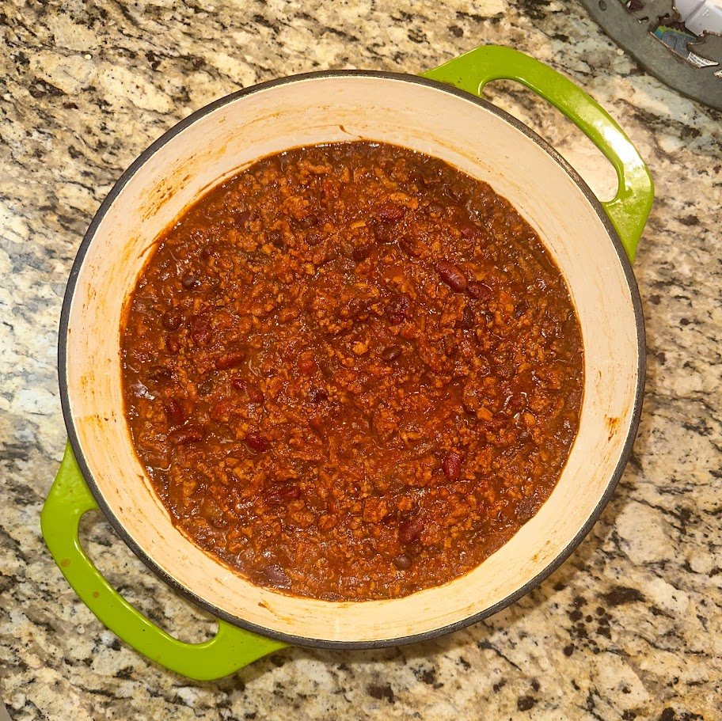

Dutch Oven Chili

Ingredients
Ground Turkey
Onion
Garlic
Can of Whole Peeled Tomatoes
Can of Tomato Paste
Can of Kidney Beans
Can of Black Beans
Poblano Pepper
Chili Powder
Ground Cumin
Paprika
Cayenne Pepper
Dried Oregano
Neutral Oil
Salt & Pepper
Instructions
Dice onion and garlic and pepper Heat Dutch Oven over medium-high heat Add a splash of oil and add in diced onion After a few minutes add in diced garlic and cook for a few more minutes Push onions and garlic to the edges of the pot and add the meat to the center Let the meat sit for a couple minutes until it starts to brown Sprinkle in all of the seasonings on top Go in with a wooden spatula and scrape the pan and mix it all together Add a splash of water to help deglaze if needed Lower the heat to simmer After all of the meat is mostly cooked add in the tomato paste and mix Next, add the whole peeled tomatoes and crush and mix them in as well Drain the liquid from the beans and add them in Add the diced pepper and a splash of water Mix it all together and simmer covered for at least 1 hour, stirring occasionally Remove the lid and continue to simmer until desired thickness